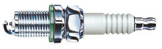
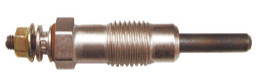
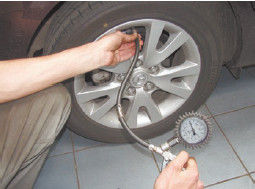
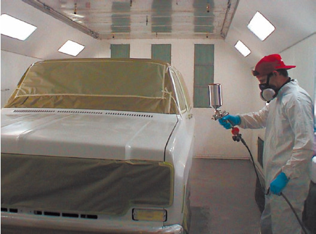
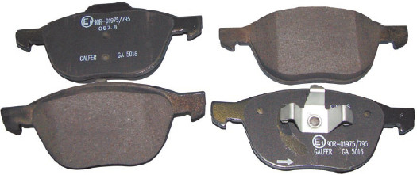

Ремонтные вопросы
Я недавно приобрел дизельный «Фольксваген». У него одна проблема: двигатель заводится не сразу, а спустя несколько секунд. Я уже заменил свечи и аккумуляторную батарею, но проблема не исчезла. Что делать?
В данном случае не нужно ничего делать. В дизельных двигателях используются не свечи зажигания, как в бензиновых (рис. 3.8), а свечи накаливания (рис. 3.9). Такие свечи должны нагреться до определенной температуры, чтобы двигатель запустился. Поэтому сначала нужно включить зажигание, затем подождать несколько секунд и только тогда, когда погаснет соответствующая лампочка на панели приборов (вам ее покажет хозяин), завести двигатель. Если все происходит именно таким образом, двигатель полностью исправен и заводится так, как должен.

Рис. 3.8. Свеча зажигания

Рис. 3.9. Свеча накаливания
Полгода назад я купил подержанный автомобиль в хорошем состоянии. Все было в порядке, но теперь начались биения руля, как только скорость становится больше 100 км/ч. Мне посоветовали поменять передние тормозные диски и проверить рулевое. Все это сделали, но биение осталось. В чем может быть причина?Гораздо чаще, чем проблемы с кривыми тормозными дисками и рулевым управлением, причиной биения являются неотбалансированные колеса. В первую очередь при возникновении такого биения следует проверить развал/схождение. Также проблема может быть с самими колесами из-за различного давления в шинах (рис. 3.10). Особенно часто подобное случается, если колеса накачаны небрежно и неравномерно или одно из колес подтравливает.

Рис. 3.10. Подкачка шин
Я приобрел автомобиль, нуждающийся в косметическом ремонте (покраска, химчистка салона и т. д.). Когда я обратился по поводу покраски, мне сказали, что требуется 9 литров краски плюс растворитель и лак. Мне кажется, что краски просят многовато. Но мастера говорят, что для качественной покраски требуется несколько слоев краски и лака, иначе лакокрасочное покрытие быстро облезет. Кто прав?В данном случае правы вы. Да, для получения качественного лакокрасочного покрытия необходимо несколько слоев и краски, и лака. Тем не менее таким количеством краски, как вам сказали, вы можете окрасить не только автомобиль, но еще и свою квартиру (и даже на дачу останется). В среднем на автомобиль стандартных габаритов требуется около 3 литров краски (рис. 3.11).

Рис. 3.11. Процесс покраски автомобиля
У меня не работает отопление салона, и мастера говорят, что засорился радиатор печки. Ремонт очень дорогой. Можно ли как-то его удешевить?Для начала нужно проверить, действительно ли засорился радиатор печки. К сожалению, такой «диагноз» весьма распространен, но в 95 % случаев он не соответствует действительности. Чаще всего речь идет всего лишь о завоздушивании системы охлаждения. Недобросовестные мастера выставляют счет за чистку или замену радиатора печки (а это действительно весьма недешево), но на самом деле всего лишь развоздушивают систему.
В принципе, это можно сделать самостоятельно: на многих моделях автомобилей предусмотрено специальное приспособление для стравливания воздуха из системы охлаждения. После того как система развоздушена, отопление салона обычно начинает благополучно работать. А вот если развоздушка не помогла, действительно придется чистить или заменять радиатор печки.
Я приобрел относительно «молодой» автомобиль (4 года) в хорошем состоянии, но через два месяца после покупки он начал «кушать» бензин. Когда же я обратился на СТО, мне сказали, что двигатель нуждается в капитальном ремонте. Но машине всего 4 года, и предыдущий хозяин ездил на ней относительно немного (пробег при покупке составлял 20 тыс. км). К тому же капитальный ремонт двигателя очень дорогой. Что делать?То, что автомобиль потребляет повышенное количество топлива, еще не означает, что что-то не в порядке с двигателем, а уж тем более, что требуется капитальный ремонт. Если машина не слишком старая, в хорошем состоянии, то, скорее всего, следует заменить маслосъемные колпачки или воздушный фильтр – засор воздушного фильтра или старые, «задубевшие» маслосъемные колпачки также вызывают повышенный расход топлива.
В моем автомобиле что-то не в порядке с электроцепями: при включении габаритов падают обороты (до 500 об/мин), а когда включаю ближний свет, обороты поднимаются до нормы (800–900 об/мин). Автоэлектрики уже проверили и перебрали/заменили все, что возможно, но неисправность осталась. Куда нужно обратиться для устранения проблемы? Может, этим занимаются специалисты по двигателям?В данном случае ремонтируется то, что никогда не было неисправным, так как у многих моделей автомобилей обороты двигателя склонны падать при малых нагрузках на генератор (например, при включении габаритов), а при увеличении нагрузки обороты поднимаются. Так как минимальные обороты исправного двигателя – 500–600 об/мин, то очевидно, что в данном случае все в порядке. Если хочется подольше сохранить ресурс двигателя, то нужно включать ближний свет, увеличивая нагрузку на генератор и повышая обороты (при низких оборотах давление в системе смазки тоже низкое, а это не способствует длительному сохранению ресурса двигателя).
Чтобы не платить за ремонт воображаемой неисправности, лучше всего не самому ставить «диагноз» автомобилю («что-то не в порядке с электроцепями»), а позволить это делать мастерам СТО. Лучше один раз заплатить за диагностику, чем несколько раз ремонтировать (и платить за это!) то, что ремонта не требует.
На моей машине заменили все тормозные колодки, после чего тормозить стало хуже, чем со старыми колодками. Я обратился на другую СТО, и там вновь заменили тормозные колодки (поставили уже другой новый комплект), но проблема осталась. Что делать?Вторая замена тормозных колодок явно была лишней. Падение эффективности рабочей тормозной системы в первое время после замены тормозных колодок является практически неизбежным. Это происходит из-за уменьшения контактной площади тормозных колодок и тормозных дисков: новые колодки ровные (рис. 3.12), а после приработки их рабочая поверхность принимает форму рабочей поверхности тормозного диска, и тогда увеличивается площадь контакта. Чтобы с самого начала не было проблем с ухудшением тормозной системы, можно заменять одновременно и тормозные колодки, и тормозные диски. Ну а если заменяются только колодки, то нужно просто подождать прирабатывания их к дискам.

Рис. 3.12. Новые тормозные колодки
Я самостоятельно заменил тормозные колодки, но, хотя на вид они были такие же, как и старые, на место не становились, и пришлось забивать их молотком. Это бракованные колодки или я что-то не так делал?Забивать тормозные колодки на место молотком однозначно не стоило. Теперь они постоянно будут перегреваться, а заодно вызывать перегрев и тормозного диска. Также при отсутствии подвижности тормозных колодок они будут быстро изнашиваться. То, что тормозные колодки не становились на место, вовсе не означает, что они бракованные. Просто их нужно было немного подточить, чтобы они встали на место без усилия, а уж тем более без молотка. Кроме того, можно было приобрести фирменные тормозные колодки, хотя, конечно, они гораздо дороже «беспородных» изделий.